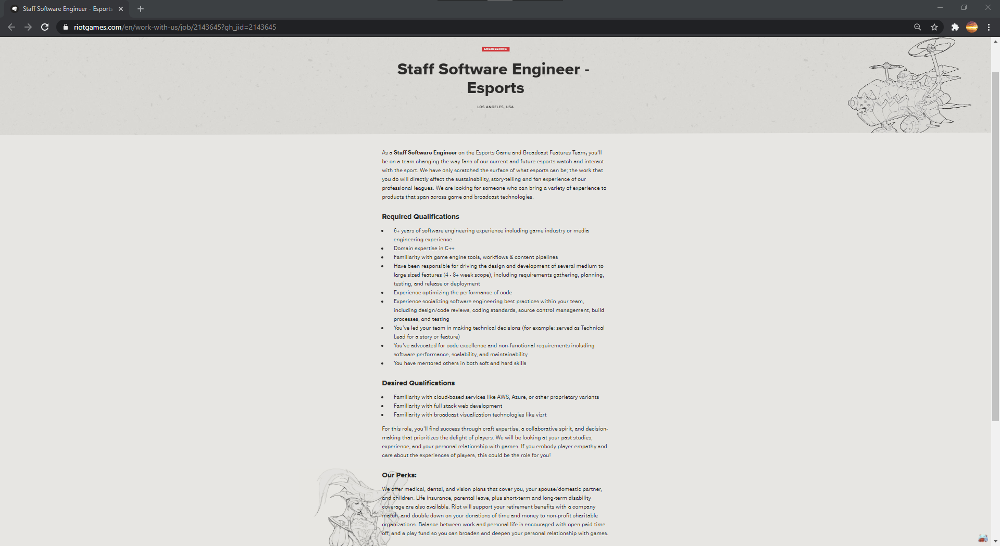

At the initial stages of my studies, my ideal job is to be a Software Engineer! Also heres a place that i would like to work at and is offering a place

A software engineer is someone who applies their knowledge of engineering principles to design, develop, maintain, test and evaluate computer software. As a Staff Sofware Engineer for RIOT in their Esports Game and Broadcast Features Team, I will be working together with the team to help in designing an everchanging experience for the fans. The work I do will affect how the stories of the professional leagues are told and the experience of the fans who watch the league.
If I'm being honest, the stable money is very appealing. To be able to work in a stable market such as IT and work as a software engineer, it's safe to say there won't be a shortage of jobs in this sector. If anything, the demand will only get higher as we move more into a technology-reliant future.
To be considered for this position, I must at least 6 years of software engineering experience including the game industry or media engineering experience. I must also have a mastery of C++, be familiar with game engine tools, workflows and content pipelines. I must also have been a leader in medium to large features (4-8+ week scope) including requirements gathering, planning, testing and or release of development. Experience optimising the performance of the code and creating an open dialogue about software engineering best practices within your team.
I don’t have any of the skills, qualifications or experience needed to be considered for this job.
Because I have no skills to build on, I am but a sponge that is completely dry, yearning for water. By taking this first step in working towards completing Intro to IT then moving on to completing the Computer Science degree. I would like to find a start-up where I can gain some experience in the real world while still working towards completing my degree. By polishing my skills in start-ups or internships, by the time I've completed my degree, I would have plenty of experience in the field and all I would be doing is constantly building on my experience and knowledge as I go. Hopefully move into the media or game industry and work there for some time as a software engineer before sending my application to RIOT and hopefully become one of their Staff Software Engineers